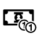

Kontakt
Zögern Sie nicht Kontakt zu mir aufzunehmen. Ich bin gerne bereit Fragen zu beantworten.
Natürlich bin ich auch über Feedback zu dieser App dankbar.
Auch Erweiterungswünsche sind gerne gesehen. Vielleicht ist eine bisher fehlende Funktion dann bereits in der nächsten Version enthalten.
Meine E-Mail-Adresse lautet: ultimo@philipp-schuermann.de
Wenn Ihnen diese App gefällt würde ich mich über eine positive Bewerbung im
Play-Store sehr freuen.
Datenschutz
Der Schutz Ihrer Daten ist mir sehr wichtig. Aus diesem Grund werden die Daten dieser App zu keinem Zeitpunkt über das Internet übertragen.
Die Berechtigung "Internetzugriff" ist zur Anzeige dieser Informationswebsite erforderlich.
Um die Sicherheit Ihrer Daten auch beim Export zu gewährleisten wird die gesamte Datei dabei mit einem frei-wählbaren Passwort verschlüsselt.
Als Verschlüsselungsalgorithmus kommt der zum aktuellen Zeitpunkt als sicher geltende AES-Algorithmus zur Anwendung.
App-Icon
Das App-Icon basiert auf folgenen zwei Icons:

Beide Icons wurden von Freepik entworfen und auf der Plattform www.flaticon.com zur Verfügung gestellt.
Sie stehen unter der Creative Commons 3.0 Lizenz.